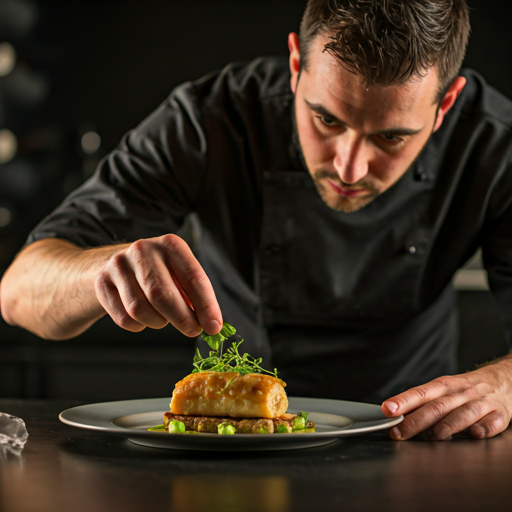

The Press Atelier.
Curated stories, high-fidelity brand assets, and the culinary philosophy behind the world's most evocative dining experience.
Brand Assets
Master Logo Suite
Download our official logo in various formats including vector, transparent PNG, and high-resolution JPEG for print and digital use.
Color Palette
Official hex codes and CMYK values for brand consistency.
Style Guide
Comprehensive guidelines on typography, spacing, and tone of voice.
Image Gallery
High-res lifestyle & culinary photography.
Latest Releases
The evolving narrative of our culinary journey, from seasonal debuts to international accolades.
Unveiling 'The Autumnal Metamorphosis' Tasting Menu
A deep dive into the locally sourced ingredients and ancient fermentation techniques used in our upcoming seasonal transformation.
The Gastronomic Editorial Named 'Top Culinary Experience 2024'
Official statement regarding the recent accolades received from the International Gourmand Society for our commitment to sensory storytelling.
Sustainability Initiative: From Soil to Soul
Our new partnership with carbon-neutral regenerative farms and the implementation of a zero-waste kitchen protocol.

"True editorial dining is about the dialogue between the kitchen and the guest."
— Executive Chef Julian Thorne
Media Inquiries
For all press inquiries, interview requests, or high-resolution asset needs, please reach out to our dedicated communications team.
General Press
press@gastronomic-editorial.com
Media Hotline
+1 (212) 555-0198
Request a Media Review
Members of the press may request a hosted experience for editorial coverage.
Submit Request